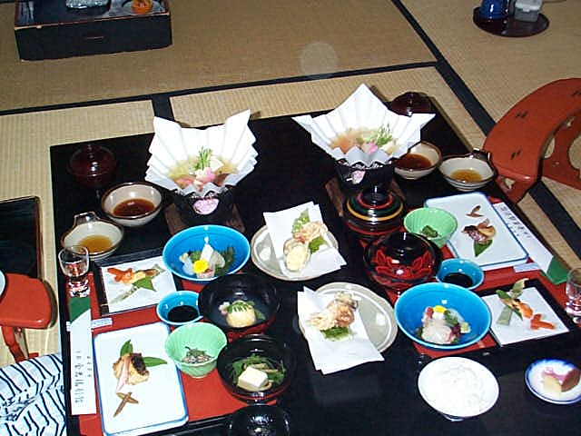

.JPG)
Ryokans are traditional Japanese hotels. You are greeted by nakai-san (maids dressed in a kimono, although the right name is "wafuku") in the lobby as you remove your shoes. Then one of them is assigned to your service and she will be the one serving you dinner and breakfast, making the room, preparing the futon, etc... During your stay in the room, you will typically be wearing a yukata (a light kimono), much more comfortable than any clothes you might have in your bags.
Ryokans are an amazing experience for a gaijin, but I strongly recommend going accompanied by a Japanese, who will interact with your hosts and also explain some of the rituals that you should obey if you don't want to shock anyone.
Here is the room, with a canal just a few blocks from downtown Kyoto.
Around 7pm, the nakai-san will set up the dinner in your room. The table is filled with very unusual food for Westerners, but pretty much everything I tasted was delicious.

Ryokans typically feature public bathrooms. Of course, you can always take your shower/bath in your room, but it's sometimes worth to check out the public baths, especially when they look like the one below (forgive the fuzzy picture, the room was quite steamy). If you are going to take a public bath, be aware that there are strict rules to observe if you don't want to upset your companions. For example, you must imperatively wash and rinse yourself with the showers before entering the bath. Don't leave one single drop of soap on your body before you step in the water, or you will get angry looks.
.JPG)